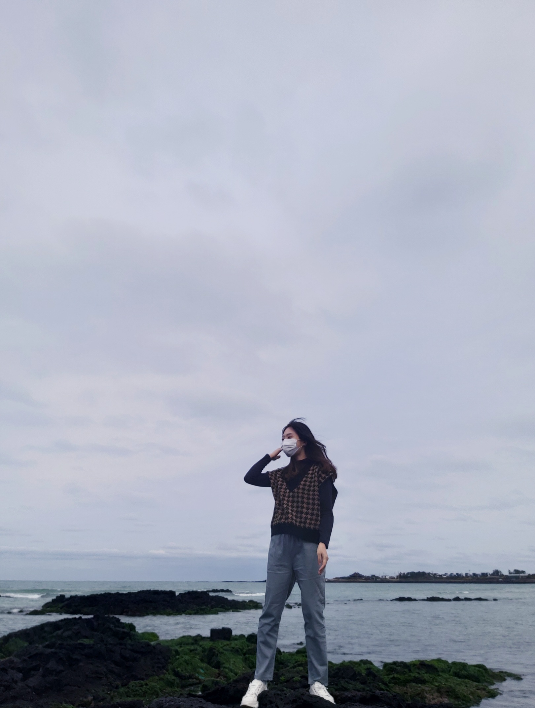
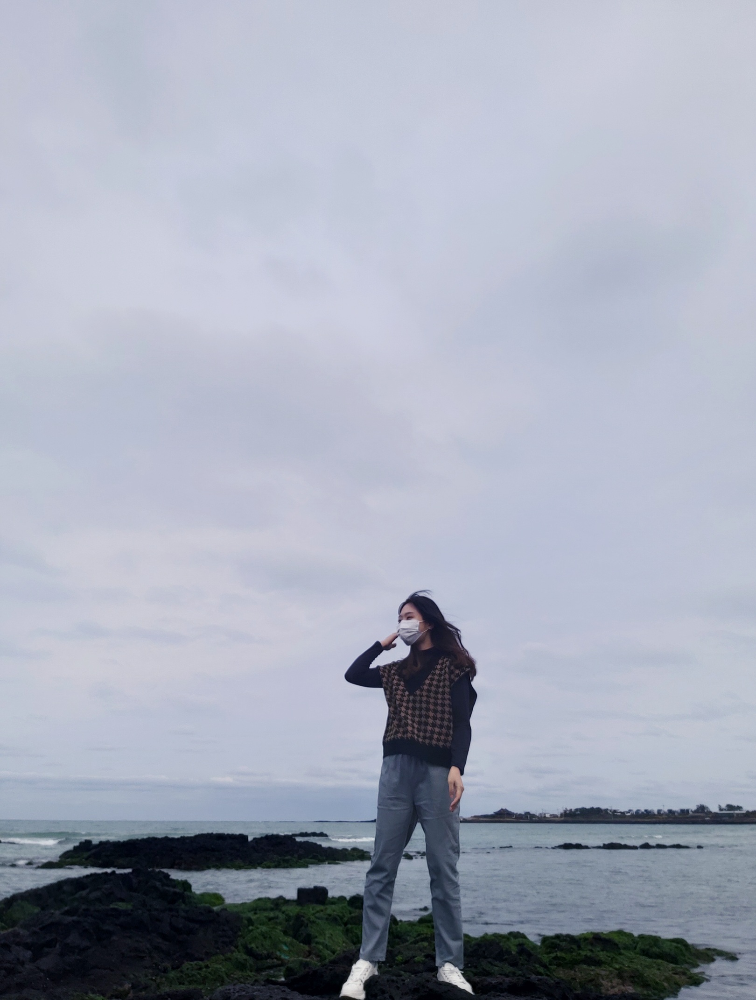

무거버거
2022. 3. 21
제주 햄버거의 명물이자 저의 페이보릿 버거인 무거버거에 다녀왔어요.🥰
패티는 두툼하고 육즙이 가득하며, 시금치, 마늘 등등의 신선한 재료들이 어우러져 조화로운 맛을 냈어요.🥬🧄🥕
특히, 빵이 맛있었고 소스와 토핑의 조화가 인상적이었어요.❤️
감자튀김도 바삭하고 적당히 간이 되어 있어, 버거와 함께 먹기 좋았어요.🧡
무거버거는 다음에도 다시 방문하고 싶은 곳이에요. 맛있는 버거와 좋은 분위기, 친절한 서비스까지,
전체적으로 너무너무 만족스러웠어요.👏


 

레스토랑 '광야'
2023. 9. 10
연남에 있는 레스토랑 '광야'에 다녀왔어요.💗
에피타이저부터 본 요리까지 모두 입맛에 잘 맞아 다음에도 꼭 가고 싶은 식당이었어요.
도착해보니 공간이 넓지 않아 꼭 예약을 해야 할 것 같았는데 우리는 다행이도 그냥 자리에 앉을 수 있었어요.🍴
우리는 리조또, 뇨끼, 파스타를 시켰는데 모두 제가 가장 좋아하는 이탈리안 메뉴였어요.
특히 까르보나라가 가장 맛있었어요!❤️
뇨끼도 엄청 오랜만에 먹었는데 간이 잘 되어있고 별로 안 느끼해서 계속 입에 들어가더라고요..!
이탈리안 요리가 땡기거나 조용히 얘기하면서 데이트를 즐기고 싶을 때 와야겠다고 생각했어요.✨